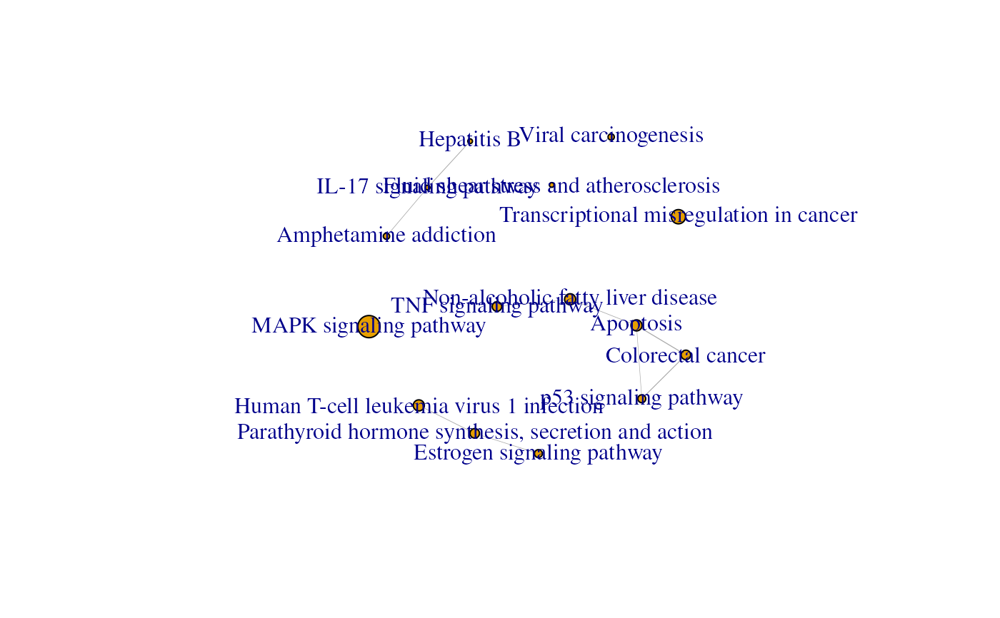
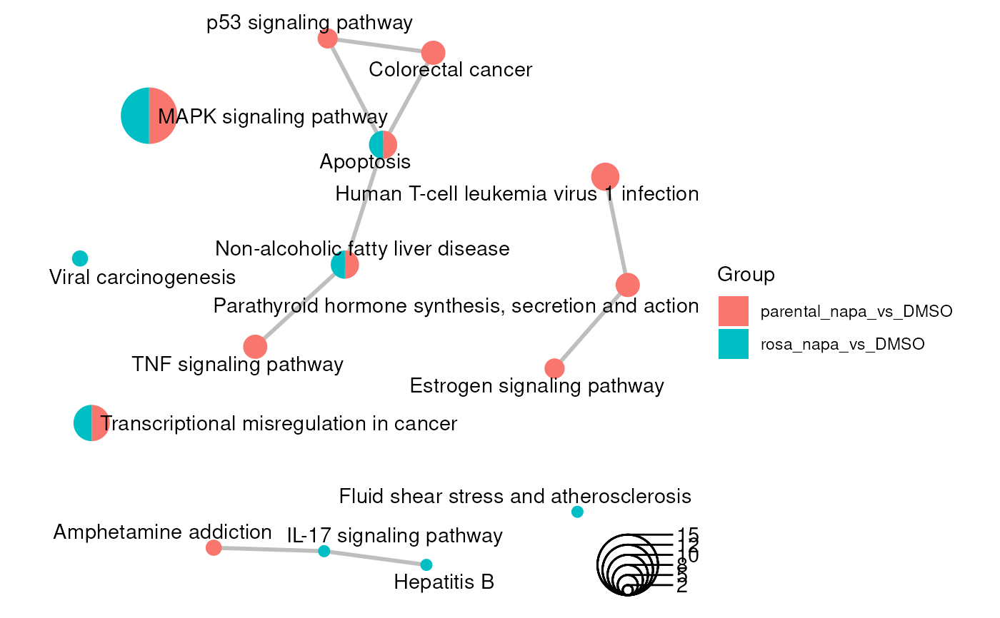

Using functional enrichment results in gprofiler2 format to create an enrichment map with multiple groups from different enrichment analyses as an igraph
Source:R/methodsEmap.R
createEnrichMapMultiBasicAsIgraph.RdUser selected enrichment terms are used to create an enrichment map. The selection of the term can by specifying by the source of the terms (GO:MF, REAC, TF, etc.) or by listing the selected term IDs. The map is only generated when there is at least on significant term to graph. The output is an enrichment map in igraph format.
Usage
createEnrichMapMultiBasicAsIgraph(
gostObjectList,
queryList,
source = c("TERM_ID", "GO:MF", "GO:CC", "GO:BP", "KEGG", "REAC", "TF", "MIRNA", "HPA",
"CORUM", "HP", "WP"),
termIDs = NULL,
removeRoot = TRUE,
showCategory = 30L,
similarityCutOff = 0.2
)Arguments
- gostObjectList
a
listofgprofiler2objects that contain the results from an enrichment analysis. The list must contain at least 2 entries. The number of entries must correspond to the number of entries for thequeryListparameter.- queryList
a
listofcharacterstrings representing the names of the queries that are going to be used to generate the graph. The query names must exist in the associatedgostObjectListobjects and follow the same order. The number of entries must correspond to the number of entries for thegostObjectListparameter.- source
a
characterstring representing the selected source that will be used to generate the network. To hand-pick the terms to be used, "TERM_ID" should be used and the list of selected term IDs should be passed through thetermIDsparameter. The possible sources are "GO:BP" for Gene Ontology Biological Process, "GO:CC" for Gene Ontology Cellular Component, "GO:MF" for Gene Ontology Molecular Function, "KEGG" for Kegg, "REAC" for Reactome, "TF" for TRANSFAC, "MIRNA" for miRTarBase, "CORUM" for CORUM database, "HP" for Human phenotype ontology and "WP" for WikiPathways. Default: "TERM_ID".- termIDs
a
vectorofcharacterstrings that contains the term IDS retained for the creation of the network. Default:NULL.- removeRoot
a
logicalthat specified if the root terms of the selected source should be removed (when present). Default:TRUE.- showCategory
a positive
integerrepresenting the maximum number of terms to display. If ainteger, the firstnterms will be displayed. IfNULL, all terms will be displayed. Default:30L.- similarityCutOff
a positive
numericbetween 0 and 1 indicating the minimum level of similarity between two terms, calculated using the Jaccard coefficient, to have an edge linking the terms. Default:0.20.
Value
a igraph object which is the enrichment map for enrichment
results. The node have 5 attributes: "name", "size", "pie", "cluster",
and "pieName". The "name" corresponds to the term description. While the
"size" corresponds to the number of unique genes found in the specific
gene set when looking at all the experiments.
The edges have 3 attributes: "similarity", "width", and
"weight". All those 3 attributes correspond to the Jaccard coefficient.
Examples
## Loading dataset containing results from 2 enrichment analyses done with
## gprofiler2
data(parentalNapaVsDMSOEnrichment)
data(rosaNapaVsDMSOEnrichment)
## Extract query information (only one in each dataset)
query1 <- unique(parentalNapaVsDMSOEnrichment$result$query)[1]
query2 <- unique(rosaNapaVsDMSOEnrichment$result$query)[1]
## Create graph for KEGG related results from
## 2 enrichment analyses
emapG <- createEnrichMapMultiBasicAsIgraph(gostObjectList=
list(parentalNapaVsDMSOEnrichment, rosaNapaVsDMSOEnrichment),
queryList=list(query1, query2), source="KEGG", removeRoot=TRUE,
similarityCutOff=0.3)
if (requireNamespace("ggplot2", quietly=TRUE) &&
requireNamespace("igraph", quietly=TRUE) &&
requireNamespace("scatterpie", quietly=TRUE) &&
requireNamespace("ggtangle", quietly=TRUE) &&
requireNamespace("ggrepel", quietly=TRUE)) {
## Create a visual representation of the enrichment map
## by default
library(igraph)
plot(emapG)
## Add see to reproduce the same graph
set.seed(12)
library(ggplot2)
library(ggtangle)
library(scatterpie)
library(ggrepel)
emapGraph <- ggplot(emapG, layout=layout_with_fr) +
geom_edge(color="gray", linewidth=1)
pieInfo <- as.data.frame(do.call(rbind, V(emapG)$pie))
colnames(pieInfo) <- V(emapG)$pieName[[1]]
## Add information about the groups associated with each node in the
## ggplot object so that the node can be colored accordingly
for (i in seq_len(ncol(pieInfo))) {
emapGraph$data[colnames(pieInfo)[i]] <- pieInfo[, i]
}
## Using scatterpie, ggtangle and ggrepel to generate the graph
## geom_scatterpie() allows to have scatter pie plot
## geom_text_repel() allows to have minimum overlying terms
## coord_fixed() forces the plot to have a 1:1 aspect ratio
emapGraph +
geom_scatterpie(aes(x=x, y=y, r=size/50),
cols=c(colnames(pieInfo)), legend_name = "Group", color=NA) +
geom_scatterpie_legend(radius=emapGraph$data$size/50, n=4,
x=max(emapGraph$data$x), y=min(emapGraph$data$y),
labeller=function(x) {round(x*50)}, label_position="right") +
geom_text_repel(aes(x=x, y=y, label=label), max.overlaps=20) +
coord_fixed()
}

#> scatterpie v0.2.6 Learn more at https://yulab-smu.top/
#>
